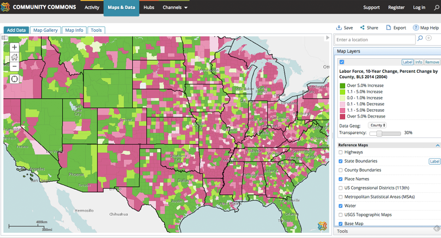
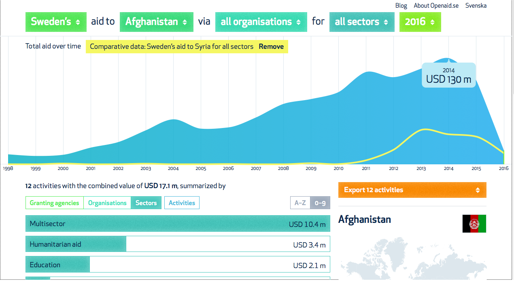

Guest post: What would the open data utopia actually look like?
We often hear of the smoother, safer and richer future that open data could help bring about. Apolitical Editor Alex Starritt speaks with some open data leaders about the steps we need to take to reach this promised land
By Alex Starritt
Revolution, transformation, fundamental change – these are the words people in open data use to describe their work’s potential. But what would the open data utopia actually look like?
One immediate point is that it need never look like very much to saturate our lives. Most people may never realise they are using open data. As Enrique Zapata, Mexico’s Deputy Director General of Open Data, put it, ‘Most people don’t know how electricity works. You walk into your house, you flick the switch and – magic – you have TV, you have your computer, you have everything. Data is the same. You don’t have to understand how it works, but you have to understand that it’s there and that you’re using it every day and that it’s ubiquitous in our daily lives.’
Nevertheless, public servants are among those who do have to understand it. They are called upon to find ways of using the data their departments produce and, ultimately, to make the open data utopia a reality. So we asked some of the world leaders in the field: what would it consist of?
The data utopia
1. Watching everything in real time
Attach a sensor to a bus and you can tell people when it will arrive. Attach a sensor to every bus, every car, every truck and train and bike and parking space in the city, and you can see where traffic is clogged, where it is running easily and where you should put new routes to free things up. And more: you can use machine learning to find the ideal new route a human wouldn’t think of.
I see it like the movie Minority Report
Apply the same principle to things like streetlights or air pollution and you can dim the lights when no pedestrians are around or tackle pollutants before people get lung disease – not after lots of deaths lead to an inquiry. The applications are almost limitless. In Barcelona, sensors track the dryness of soil in the park, and alert the gardening crews to which beds need watering.
Civil servants will be able to model the effects of new projects in incredible detail. Carolina Pozo, Executive Director of Quito’s Innovation Lab, said, ‘What happens now is that things are improvised: the Director of Education, for a random example, doesn’t know that if he builds a school on a certain corner that changes the public transport in the streets around it. I see it like the movie Minority Report. Imagine if you had a dashboard, a map of a neighbourhood, where you can throw in different policies and variables and see the scenarios of what impact they would have, and react before something happens.’
2. Showing citizens the world they live in
Have you ever used CityMapper or GoogleMaps to plan a journey? The apps run on open information about traffic. So the same data that allows public servants to plan the transport network lets individuals plan how they use it.
That same principle applies to higher-order decisions, like where to send your children to school or which neighbourhood to live in. The US has already made maps combining statistics about jobs, rents and schools to show where has a low cost of living and a high quality of life. That also has a reciprocal effect on the schools and neighbourhoods themselves.
 A US map showing where schools are good, jobs plentiful and living costs low
As Malick Tapsoba, Deputy Manager of Burkina Faso’s Open Data Initiative, said, ‘Having this information about, say, schools helps improve the level of education in the whole country. If it’s clear that the schools lack something, it motivates people to focus on that. If we use the data, it can impact the lives of the whole nation.’
This reciprocity can be extremely powerful, especially when citizens start to contribute directly to the mass of information. One oft-cited example is Vision Zero, a traffic scheme with which New York has lowered road-accident deaths to their lowest number since before the First World War, despite the population doubling. The scheme asked motorists, cyclists and pedestrians to upload geo-tagged pictures of junctions, corners or roads they thought were scary or dangerous, then combined 10,000 responses with all the other transport information to redesign street layouts.
3. Scrutinising government itself
Earlier this year, a blogger in New York used the police department’s ticket data to show that the NYPD had erroneously given out millions of dollars in fines. He sent his analysis to the NYPD, who wrote back, ‘It appears to be a misunderstanding by officers of a recent, abstruse change in the parking rules. We appreciate [the blogger] bringing this anomaly to our attention.’
This gets a lot more serious – and the potential gets much bigger – when it comes to a problem that should automatically shrink from scrutiny: corruption. A great example comes from Mexico, a country where corruption is endemic. In building a new airport in the capital, one of the largest infrastructure projects in the world, every amount paid to every contractor is being published, so that anyone can see whether contracts are suspiciously high or have gone to cronies.
If taken to its conclusion, this could mean accounting for every brick, every bag of sand, every gallon of fuel – and every penny spent by the state. Some of the most cutting-edge work here has been done by Sweden, which has made an astonishingly detailed visualisation of what all its foreign aid has been spent on, but also added reports on the effects that money has had, i.e. not just what was spent, but whether it was well spent.
 Sweden’s Open Aid showing payments to Afghanistan and Syria
Marija Kujačić, Head of E-Government Development in Serbia, said, ‘It’s very important to have this sense that information is being publicly provided. We have a law on free access to information that’s in the public interest. And it’s the law, but open data would actually provide a user-centric approach to information.’
4. Making money
By publishing some of the 3.5billion weather recordings it makes every day, the US meteorological service, the NOAA, has created business valued at $31.5billion each year. That includes the US’s huge agricultural sector, which uses predictions to judge when to plant which crops; energy companies predicting demand and trying to generate the right amount of power to match; and ships and airlines adjusting their navigation around inclement weather. It has also fostered the growth of a multi-billion dollar financial industry in weather derivatives.
 US agriculture uses NOAA data to decide when to plant and harvest
US agriculture uses NOAA data to decide when to plant and harvest
It must be stressed that this annual $30billion benefit – the size of the federal government’s total annual science budget – comes from the publication of one type of data. The other opportunities to create jobs and grow the economy are myriad; the Open Data Institute in London runs an incubator for start-ups using information for a whole range of things: to find land that can be developed, to resolve commercial disputes, to forecast when machines will fail.
How do we reach this promised land?
We are still at the beginning of the big data revolution. Even the NOAA, which is considered exemplary, makes only 10% of its daily data available to the public, and is only one agency in one country. What the leaders talk about is ‘open by default’ – having all agencies and departments publish all the information they gather automatically, without having to be asked.
Every leader we spoke to agreed that the necessary technology already exists; that that is not an obstacle.
They mentioned concerns about privacy and making sure data are anonymised, as well as various organisational difficulties: for example, some agencies, like the UK Land Registry, make money selling their data and so don’t want to give it away for free. Or that because government budgets often have to be fixed from the start of the fiscal year, agencies can’t respond to new developments until the next one.
Let’s face it, data is boring for most people
But all agreed that the most important factor for achieving all this is political will. As Alka Mishra, who leads India’s open data work, put it, ‘This has to be mandated. This should be a mandate for all government departments. Only then would it be given priority and focus. Only then will we see its true value.’
And gathering political will is primarily a matter of communication. That means demonstrating the real worth of data with case studies and hackathons, and fostering the development of killer applications – like CityMapper – that everyone can see and grasp the value of.
As Enrique Zapata put it, ‘Just by saying the word "data", you’re putting a barrier between you and the person you’re communicating with. Because let’s face it, data is boring for most people. Getting there has a lot to do with communication and narrative, and being exposed to open data work in lots of countries.
‘But people are beginning to see that these young open data guys who don’t seem to follow the rules are delivering, and are making things a reality.’
Alex Starritt is Editor at Apolitical. Follow @apoliticalco on Twitter.
This piece was written as part of a content partnership with Apolitical, an international platform for innovators in public service, and first appeared on the Apolitical website.
If you have ideas or experience in open data that you'd like to share, pitch us a blog or tweet us at @ODIHQ.